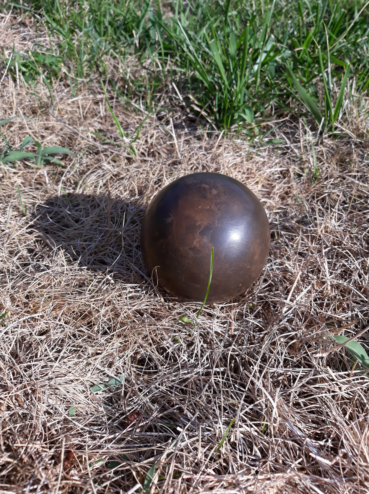

All About Dorodangos
Welcome to the wonderful world of dorodangos! This site is my humble contribution to the preservation of the art of dorodangos. What is a dorodango, you might ask? Well, you've come to the right place to learn about them! This site will explain the "what" and the "why" of dorodangos (navigate to History above for more information), and will also go into the process of creating these wonderful orbs of earth. Below is a small gallery of my own work, and if you are at all intrigued, you have already taken your first step down the journey of creating your own dorodangos!
